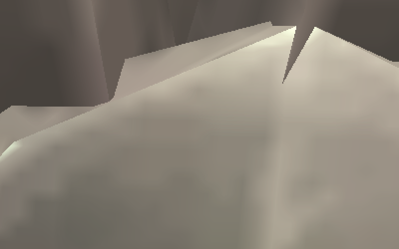
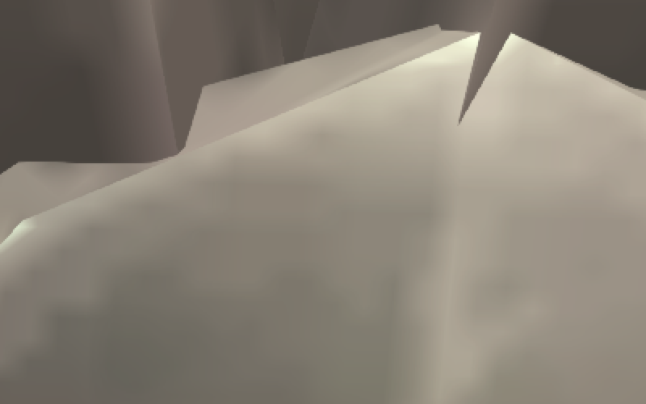
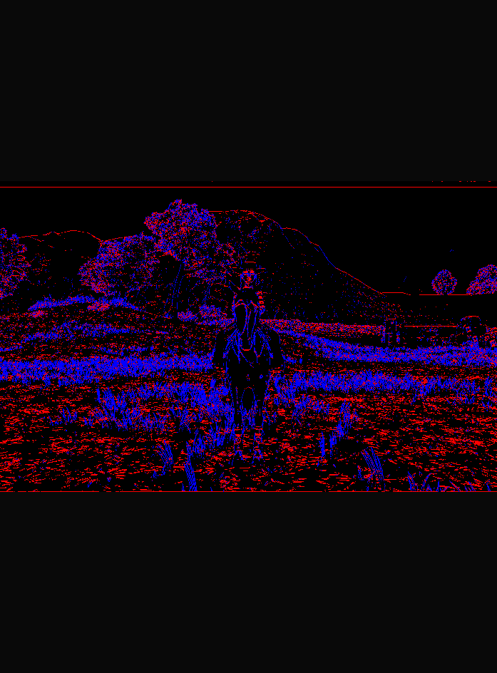

Summary
At the milestone, we've wired ReShade into Star Stable Online along with other testing targets, confirmed that the game’s
depth buffer is available through ReShade, and routed it through our shared Header.fxh as linearized depth
(SSO::Depth) for effects and debug views. ReShade also only exposes the final rendered image from the game; for Star Stable Online and other testing target, this is a
SDR color buffer. This, along with not being able to access contextually relevant scene information directly from the game like normals and light sources,
means we have to tweak our own effects to achieve a more realistic look. We’ve implemented the shared shader header and several baseline effects, including bloom, depth of field, anti-aliasing, and a color gradient. We've also started setting up a lookup table for color grading.
Milestone Progress
Preliminary results
- Milestone video:
- Screenshot set: before/after captures from Star Stable Online at 2560×1600, ReShade effect off (left) vs. on (right). Click any image to open the full-resolution capture.


Header.fxh.




Implementation status
-
Shared header (
Header.fxh): linear/sRGB helpers, luminance, depth, debug views. -
Bloom (
Bloom.fx; processed in linear light viaHeader.fxh):Native ReShade only exposes a SDR color buffer, so we implemented Bloom using a soft threshold-based bloom pass with a downsample/upsample mip pyramid. Pixels above a threshold in luminance contribute to the bloom effect, with a soft knee function to soften the transition of the light into the bloom pass.
The bloom pass is spread through a 7 level mip pyramid as described in Jimenez's paper "Next Generation Post Processing in Call of Duty: Advanced Warfare". The downsample uses a 13 tap downsample, which takes 13 samples from the 4x4 neighborhood around the pixel and averages them to get the downsampled value. The upsample uses a 3x3 tent upsample, which averages the 9 samples in the 3x3 neighborhood as we travel back up the pyramid. The bloom is then composited onto the scene using a screen blend so halos stay visible on a bright daytime sky, lightening the overall scene without clipping.
Since we do not have access to light sources, we implemented extra tweaks to the bloom effect to help it look more realistic. Local contrast subtracts a blurred neighborhood average before thresholding so compact lights (sun, stars) bloom more than smooth bright regions (sky, clouds). Glow radius and large light source glow use different pyramid levels to boost the bloom effect for large and small light sources respectively. Using the depth buffer, foreground bloom scales glow drawn over non-sky geometry and sky light boost strengthens bloom extracted from far-plane sky pixels.
-
Depth of field (
DepthOfField.fx): adjustable focus, gather-based bokeh blur.A first pass computes a signed circle of confusion (CoC) per pixel from linearized depth, the focus distance, and the blur strength. A second pass gathers 64 samples in a golden-angle spiral disk, counting a sample only if its blur disk reaches the pixel, and clamps background samples so they don't bleed over a sharper foreground.
-
Anti-aliasing (
AntiAliasing.fx): post-process edge-oriented AA.Our single-pass FXAA-style shader compares luminance across a 3×3 pixel neighborhood to find high-contrast edges, estimates whether each edge is horizontal or vertical, and shifts the final sample to smooth stair-step patterns. Adjustable thresholds and subpixel smoothing balance stronger filtering against preserving fine texture detail. To test it, we turned off anti-aliasing in the game's graphics settings so that any edge smoothing comes from our shader alone.

-
Color grading (
ColorGrading.fx): LUT-based color correction.Color gradient and LUT color grading. We implemented a ReShade post-processing shader that applies a color gradient to the rendered frame. We also began setting up StarGradeLUT.png, a lookup table designed to map each pixel's input RGB color to a graded output color. The next step is to test the LUT on a teammate's Windows setup and compare the same scene with grading enabled and disabled, keeping the camera and other shader settings fixed.
- SSAO (horizon-based + depth-aware blur):
Updated Plan
(1) Baseline plan
Completed
-
Shared header (
Header.fxh): linear/sRGB, luminance, linearized depth, debug views. -
Bloom (
Bloom.fx,Bloom.md): thresholded bright pass, Jimenez 13-tap / tent mip pyramid, optional starburst, depth-aware sky/foreground controls, screen-blend composite. - Depth of field (
DepthOfField.fx): adjustable focus, gather-based bokeh. - Anti-aliasing (
AntiAliasing.fx): FXAA/SMAA style edge detection. - Color grading (
ColorGrading.fx): LUT-based color correction. - Milestone demo and comparison images.
Still to do (baseline)
- SSAO (horizon-based) with a depth-aware blur; bring up to the same shared-header stack as the other effects.
- Tonemapping, LUT color grading, vignette, and film grain (graded on LDR back buffer, not engine HDR).
- In-game tuning and documentation: Star Stable depth access, bloom/DoF/AA quality vs. performance, artifact notes (UI, clouds, pause).
- At least three presets that combine passes in different orders and intensities.
- Final demo and comparison images, performance numbers, and the final writeup.
(2) Aspirational plan
- Screen-space GI: ray march the depth buffer for one bounce of indirect color
- Volumetric fog and light shafts, maybe with animated noise for mist or clouds
- Temporal accumulation so AO/GI can use fewer samples per frame
- A ReShade add-on (or fork) that exposes more than color and depth, like normals or HDR color. We'd only try this on an offline test target.
- Second-game profile: support one fallback game with a saved profile + depth definitions + default preset. Measure how much preset reuse is possible versus per-game retuning, optionally with a helper to apply saved profiles.